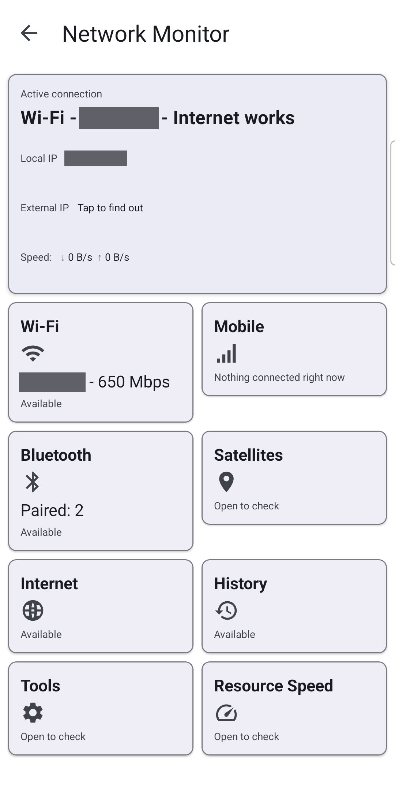
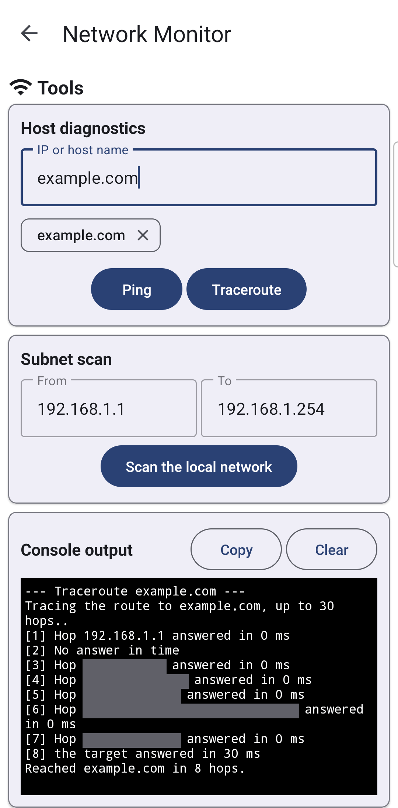

Checking Your Connection with Network Monitor
Switch on the opt-in Network Monitor, read its summary and its Wi-Fi, Mobile, Bluetooth and Satellites sections with their live charts, ping or trace a single address in Tools, measure one resource's real speed, and carry the same readings to a home-screen widget, a launcher gadget and your watch.
Why You'll Love This
A video keeps stalling, a shared folder takes forever to open, or you just want to know why the bars on your phone look fine while nothing loads. Network Monitor is the app's own diagnostic panel for exactly that moment - your connection, your signal, your addresses and your speed, all in one place, without guessing which of the phone, the Wi-Fi or the server is at fault.
- ✓ Standard or noLegal edition. See The seven editions.
- ✓ Network Monitor switched on as a program in Settings - see Built-in programs.
- ✓ Location permission for the Wi-Fi details and the Satellites section: the app explains what it is for before it asks.
Turn Network Monitor on
Network Monitor is off until you switch it on - it is an opt-in program, not something running quietly from the first install. Its own description in Settings reads "Adds a diagnostic program showing the connection, the signal and the network details." Once it is on, it appears in the same places every other program does - the programs menu, the programs panel, the launcher desktop. The full switch-on steps, and where a program shows up afterwards, are in Built-in programs.
Read the summary at a glance
Open Network Monitor and it lands on its summary screen: Active connection at the top - or "Nothing is connected. Turn on Wi-Fi or mobile data to get online." if you are offline - then a row of tiles that each open their own screen with their own live reading: Wi-Fi, Mobile, Bluetooth, Satellites, Internet, History, Tools and Resource Speed.
Two details on the summary itself are worth knowing. External IP stays hidden behind Tap to find out until you ask for it - the app has to reach a public service on the internet to learn it, and it says so first: "Your address goes to another service." And the live speed number shown here has a twin: the same reading also sits in the launcher's own status bar as Transfer speed - see The status area and notifications.

Wi-Fi and mobile signal, charted live
Wi-Fi lines up Network, Frequency, Link speed and Wi-Fi standard, with a Signal chart underneath tracking the strength in dBm over time - now, minimum, maximum and whether it is rising, falling or steady. Mobile does the same per SIM, and where Android leaves the app no choice it says so plainly: "Android does not let an app switch mobile data or a SIM. Only the system settings can." - with an Open system network settings button right there instead of a dead end.
A single bad reading can skew a chart for the rest of the session. Tap the chart itself and it restarts, collecting fresh from that moment: "Chart restarted. Collecting from now."
What is connected over Bluetooth right now
Bluetooth separates what is actually connected from what is merely paired: a Connected now list on top, naming every profile Android will report - headset, speaker, hearing aid, even a paired watch - and a Paired, not connected list below it. Nothing connected shows a plain "Nothing is connected right now" instead of an empty gap.
Pick a connected device with Chart a connected device and its own Device signal chart starts, restartable the same way as the Wi-Fi and mobile ones above.
Satellites, position, and a track that stays put
Satellites lists what is in view and what actually counts toward your position, each one naming its constellation, signal strength and whether it is "counted in position" or "not counted." Below that sits Position - latitude, longitude, accuracy, fix time - with its own signal-strength chart while a fix is found.
Record the track on this device turns the section into a simple trail recorder, and it says exactly where the points go: "The track stays on this device and is written only while this screen is open. Nothing is sent anywhere." It never leaves the phone on its own - only Share the track file, tapped by you, hands it to whichever app you choose.
Ask one address directly - Tools
Tools points the app at a single address instead of the network at large. Under Host diagnostics, type an IP or host name, then tap Ping or Traceroute - nothing runs until you tap it. Both write into a scrolling Console output: a ping answers back with each hop's time, a traceroute walks the path outward and reports how many hops it took to arrive, or where it stopped answering. Clear wipes the console, Copy takes it to the clipboard for a support message.

How fast one resource really is
Resource Speed turns the same idea toward one of your own resources rather than the internet in general: pick one under Target Resource, run the test, and Speed Results reports its read and write throughput - useful for telling a slow shared folder from a slow phone. A resource that only allows reading says so plainly, (Read-only resource), instead of pretending a write test ran.
The same readings on your home screen and desktop
You do not have to open the app to see one number. The Network monitor widget sits on the Android home screen, resizable, and shows a single reading of your choice; Choose what to show offers Local address, Wi-Fi, Bluetooth, SIM, Signal level, Live speed, External address, Last speed test, Saved resource, Satellites or Hotspot state. Tap it and it opens Network Monitor straight on that reading's own section - see FastMediaSorter widgets for your home screen.
The launcher desktop offers the same set as a gadget: place it, pick a reading the same way when you do, and tapping it opens the matching section too - see Desktop gadgets.
The same check, on your wrist
With a paired watch in the Standard or noLegal edition, Network Monitor comes along: swipe to Programs on the watch app and tap Network Monitor for a summary sized for the round screen - the active link, your addresses, and the same sections arranged to fit with far less scrolling than a full-width list would take. The full walk-through and a screenshot of the watch screen are in Wrist programs, timers and tools.
What You Get
A slow load stops being a guess: the summary says at a glance whether you are online at all, Wi-Fi, Mobile, Bluetooth and Satellites each get their own live reading and a restartable chart, Tools and Resource Speed let you point straight at one address or one resource, and the same numbers follow you to the home screen, the launcher desktop and the watch.
Tips and Troubleshooting
- A speed test warns before it spends your data. It moves about 20 MB in total, and on a mobile plan that traffic is billed - the app says so and lets you cancel before it starts, or stops it mid-test at any time.
- History keeps a record of what you checked. Past speed tests, resource checks and traceroutes stay in History until you tap Export to save them or Clear to remove them - clearing them cannot be undone.
- A resource that will not answer says why. A speed or connection check against a resource that no longer exists or refuses to answer names the reason instead of a bare failure.
- Not sure Network Monitor is even switched on? Built-in programs covers every program's switch in one place, including this one.